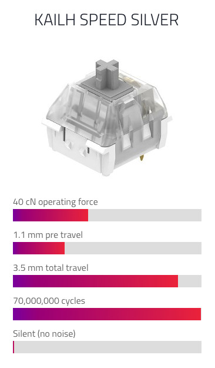
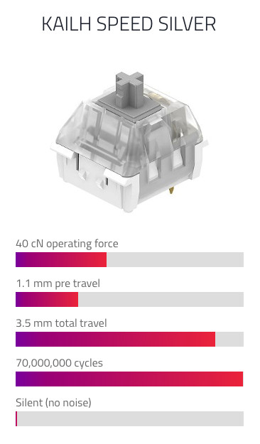

⌨️
Algunos temas que vamos a tratar:
- Diferentes tipos de teclado
- Características de un teclado mecánico
- Consejos para adquirir un teclado
- Mitos y leyendas!
- Salud
Disclaimer!
üëæ
Esta charla no va de teclados para gaming
Efecto ghosting, implicaciones del NKRO, etc.
Dídac García
web developer
@didaquisdidaquis.github.io
Para que os conozca un poco...
¿Cuántos de vosotros tenéis un teclado mecánico?
Pregunta para los que no tiene un teclado mecánico...
¿Cuantós de vosotros habéis probado un teclado mecánico alguna vez?
Hagamos un repaso de lo que sabemos sobre teclados, sean mecánicos o no.
Historia del teclado informático
Teletipos ➡️ Máquina de escribir ➡️ Teclado informático
- Primeros diseños de teletipos y máquinas de escribir (siglos XVIII y XIX)
- Hacia 1920, la máquina de escribir había alcanzado un diseño más o menos estándar (QWERTY)
- En los 70 llegan los teclados informáticos domésticos tal como los conocemos hoy en día (Atari 8-bit family, Apple II series, IBM PC, etc.)
Para más info, Wikipedia!
https://es.wikipedia.org/wiki/Teletipo https://es.wikipedia.org/wiki/Máquina_de_escribir https://es.wikipedia.org/wiki/Teclado_(informática) https://en.wikipedia.org/wiki/Model_M_keyboardIBM Model M (1985)
Consolidando el teclado que todos conocemos

Para más info, Wikipedia!
https://en.wikipedia.org/wiki/Model_M_keyboardTipos de teclado
Hay un montón de tipos de teclado! Podríamos clasificarlos por múltiples criterios, por ejemplo:
- Tipos de pulsación
- Distribución de las teclas
- Distribución del alfabeto
- Número de teclas
- Forma
Tipos de pulsación
Algunos que seguramente ya conocéis:
- Teclados capacitivos
- Teclados en pantalla
- Teclados mecánicos
- Teclados de membrana
- Teclados de tijera
Distribución de las teclas
Disposición física de las teclas:
- ANSI
- ISO (ISO-UK, ISO-FR, ISO-ES, etc...)
- JIS
ANSI vs ISO

Distribución del alfabeto
Disposición de las letras más comunes:
- QWERTY
- Dvorak
Número de teclas
Clasificación según el número de teclas:
- 100%
- Tenkeyless (TKL, 75%, 80%)
- 60%
100% vs TKL vs 60%

Why not?

Forma
Nos referimos a la ergonomía de los teclados:
- Rectos
- Ergonómicos
Teclados ergonómicos
S√≠ndrome del túnel carpiano üò±

Síndrome del túnel carpiano
Reposabrazos / reposamu√±ecas ü§©
Teclados ergonómicos

Teclados ergonómicos

Teclados personalizados
Uso de un software de edición de video profesional
Hablemos de teclados mecánicos
La magia de los teclados mecánicos
En un teclado mecánico, cada tecla está formada por la combinación de un "switch" y un "keycap".

Al comprar un teclado mecánico, es posible escoger el comportamiento al pulsar una tecla.
De esto se encargan los switches
ü§î
Switches
 

Switches
Clicky vs linear vs tactile


Switches

Aprendamos un poco sobre las keycaps.
Se fabrican en diferentes materiales, el grosor y su forma varía según el fabricante y además, deben de poder conectarse con los switches de tu teclado
ü§î
Keycaps

Keycaps
Los principales materiales son: ABS y PBT.
Tienen diferente tacto y durabilidad
Keycaps
ABS
Keycaps
PBT

Keycaps
Grosor, forma y perfil

Keycaps
Grosor, forma y perfil

Keycaps
Grosor, forma y perfil

Keycaps
Deben de encajar con el correspondiente switch


Keycaps
Existenten diferentes sistemas de impresión

Keycaps
Double shot injection
Keycaps
Se pueden hacer teclas muy bonitas y trabajadas